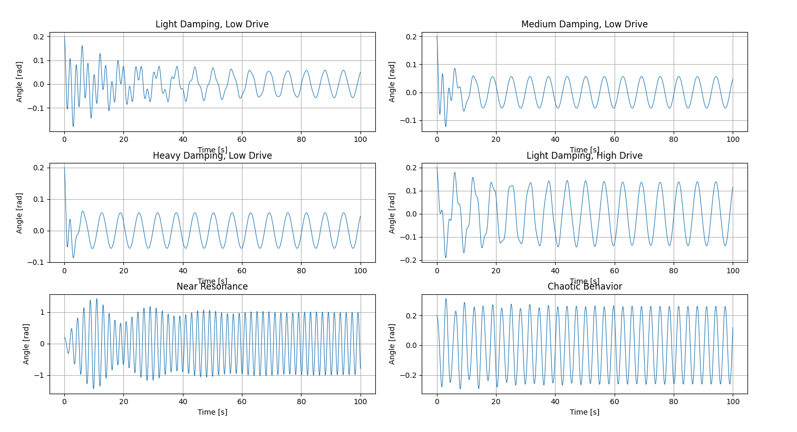

Problem 2
🧠 General Solutions for the Forced Damped Pendulum
1. Full Nonlinear Equation
The forced damped pendulum is governed by the second-order nonlinear ODE:
This is nonlinear, non-autonomous, and second-order, with: - Damping: \( b\frac{d\theta}{dt} \) - Restoring force: \( \frac{g}{L} \sin(\theta) \) - External driving: \( A\cos(\omega_d t) \)
❗General solutions to this equation cannot be written in closed form. Numerical techniques are necessary.
2. Linearized Case (Small-Angle Approximation)
For small oscillations \( \theta \ll 1 \), we use:
Then the equation becomes:
This is a linear inhomogeneous second-order ODE, with the general solution:
🔹 Homogeneous Solution (\( \theta_h \)):
Solving this gives:
- Underdamped: \( b^2 < 4\omega_0^2 \)
- Critically damped: \( b^2 = 4\omega_0^2 \)
- Overdamped: \( b^2 > 4\omega_0^2 \)
Each case leads to exponential decay of oscillations.
🔹 Particular Solution (\( \theta_p \)):
We seek a steady-state solution of the form:
Where: - \( B \): amplitude of response - \( \delta \): phase shift between driving force and response
Substitute into the linearized equation to get:
3. Resonance Behavior
- Resonance occurs when the driving frequency \( \omega_d \) is near the natural frequency \( \omega_0 \)
- The system’s response peaks when:
The amplitude increases dramatically unless damping \( b \) is large.
4. Numerical and Chaotic Solutions (Full Nonlinear Case)
For larger amplitudes, the small-angle approximation breaks down, and nonlinear effects dominate, especially when: - \( A \) is large (strong driving) - \( b \) is small (weak damping)
🌪 Chaos Emerges When:
- There's sensitive dependence on initial conditions
- The system exhibits non-periodic, bounded trajectories
- Phase space trajectories fill a region instead of forming closed loops
These must be analyzed using: - Numerical Integration (e.g., Runge-Kutta) - Poincaré Maps - Lyapunov Exponents - Bifurcation Diagrams
5. Summary of Behavior by Regime
| Regime | Behavior | Solution Type |
|---|---|---|
| Small-angle, no drive | Simple Harmonic Motion | Analytic |
| Small-angle, with drive | Linear resonance | Analytic (steady-state + decay) |
| Full equation, weak drive | Quasiperiodic or periodic | Numerical |
| Full equation, strong drive | Chaotic | Numerical |
Graphical Representations of Motion
The plots below show the angular motion of the forced damped pendulum under various parameter regimes:
